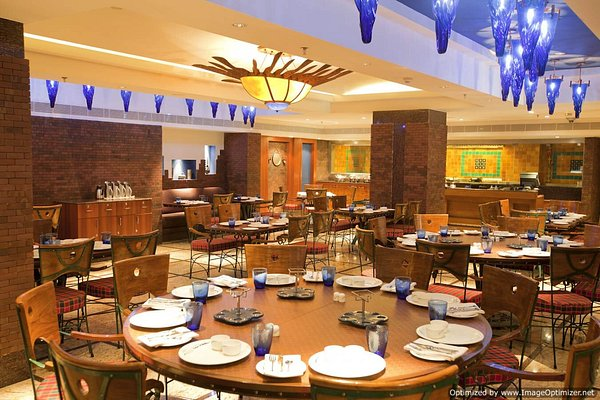
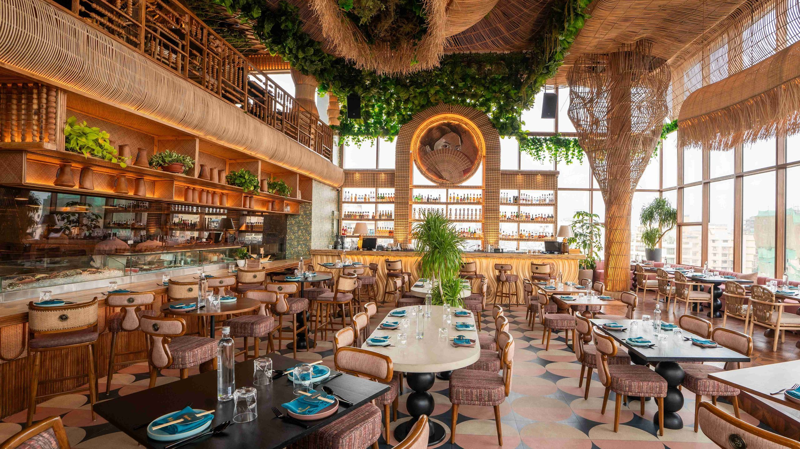
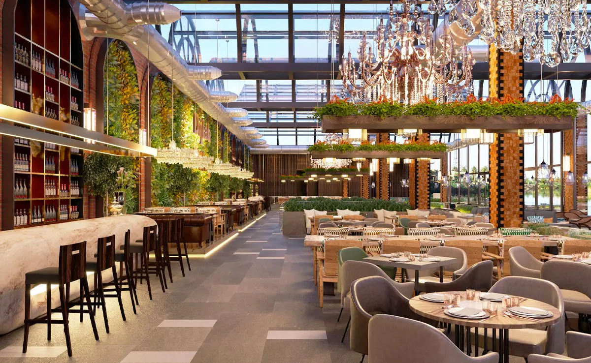
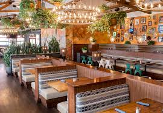
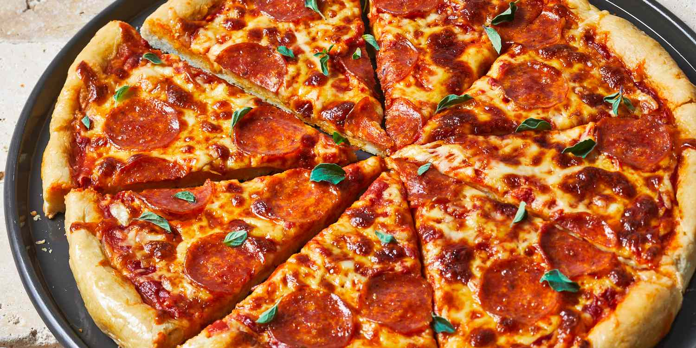
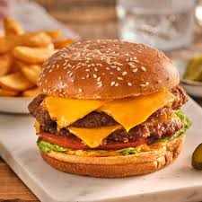
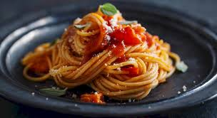
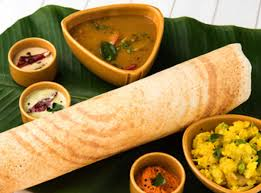
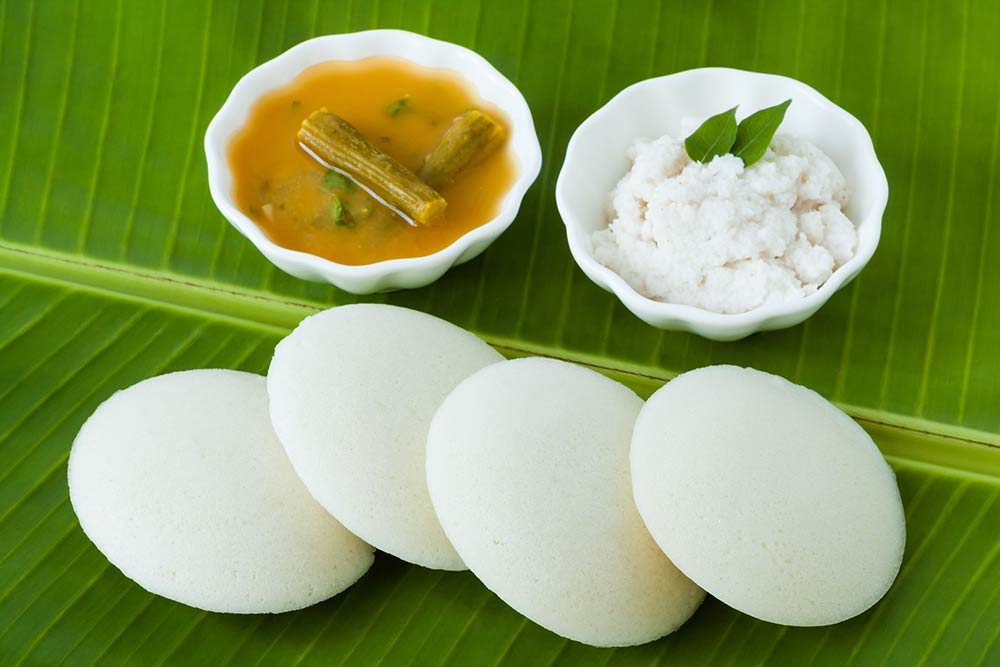

Food is a substance consumed to provide nutritional support for an organism. Food is usually of plant,animal or fungal origin and contain essential nutrients.
Pizza

Pizza, a globally popular dish, is an Italian culinary creation typically consisting of a flat bread base topped with sauce, cheese, and various other ingredients. Its origins are traced back to Naples, Italy, where it evolved from simpler flatbreads. Today, pizza is enjoyed in countless variations worldwide, with toppings ranging from classic mozzarella and tomato to more contemporary additions like pepperoni, vegetables, and even fruits.French Fries
 French fries, or simply fries, also known as Belgian fries, chips, and finger chips, are batonnet or julienne-cut deep-fried potatoes of disputed origin. They are prepared by cutting potatoes into even
strips, drying them, and frying them, usually in a deep fryer. Pre-cut, blanched, and frozen russet potatoes are widely
used, and sometimes baked in a regular or convection oven, such as an air fryer.
French fries are served hot, either soft or crispy, and are generally eaten as part of lunch or dinner or by themselves
as a snack, and they commonly appear on the menus of diners, fast food restaurants, pubs, and bars. They are typically
salted and may be served with ketchup, vinegar, mayonnaise, tomato sauce, or other sauces. Fries can be topped more
heavily, as in the dishes of poutine, loaded fries or chili cheese fries, and are occasionally made from sweet potatoes
instead of potatoes..
French fries, or simply fries, also known as Belgian fries, chips, and finger chips, are batonnet or julienne-cut deep-fried potatoes of disputed origin. They are prepared by cutting potatoes into even
strips, drying them, and frying them, usually in a deep fryer. Pre-cut, blanched, and frozen russet potatoes are widely
used, and sometimes baked in a regular or convection oven, such as an air fryer.
French fries are served hot, either soft or crispy, and are generally eaten as part of lunch or dinner or by themselves
as a snack, and they commonly appear on the menus of diners, fast food restaurants, pubs, and bars. They are typically
salted and may be served with ketchup, vinegar, mayonnaise, tomato sauce, or other sauces. Fries can be topped more
heavily, as in the dishes of poutine, loaded fries or chili cheese fries, and are occasionally made from sweet potatoes
instead of potatoes..
Burger

A burger is a popular food item generally consisting of a cooked ground meat patty, typically beef, placed between two halves of a bread roll or bun. It's often adorned with various toppings and sauces. Burgers are a staple in many cultures and can be found in restaurants, fast-food chains, and even made at home.Pasta

Pasta is a type of food, traditionally a noodle, made from an unleavened dough of wheat flour, water, and sometimes eggs. It's a staple in many cuisines, particularly Italian, and comes in a wide variety of shapes and sizes. Pasta can be dried or fresh, and is typically cooked by boiling.Dosa

Dosa is a thin, savory pancake originating from South India, typically made from a fermented batter of rice and black gram. It's a popular breakfast and snack item, often served hot with various chutneys and sambar.Idly

idli or idly is a type of savoury rice cake, originating from South India, popular as a breakfast food in Southern India and in Sri Lanka. The cakes are made by steaming a batter consisting of fermented de-husked black lentils and rice. The fermentation process breaks down the starches so that they are more readily metabolised by the body. Idli has several variations, including rava idli, which is made from semolina. Regional variants include sanna of Konkan.